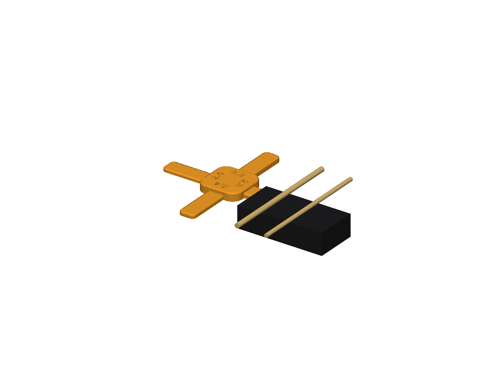
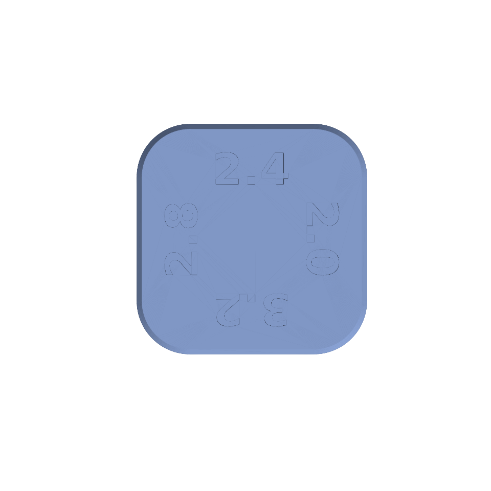

<title>P-Bass Pickup Gauge</title>
<link rel="stylesheet" href="https://fonts.googleapis.com/css2?family=Barlow+Semi+Condensed:wght@600;700&family=Barlow:wght@400;500&display=swap">
<style>
  /* Layout: one 820px column, a workshop card; the hero scene first, then facts in rows of tiles. */
  :root {
    --bg: #f3efe7;
    --surface: #fbf9f4;
    --ink: #1c1a17;
    --muted: #6b655c;
    --line: #d9d2c4;
    --accent: #d9801f;
    --accent-ink: #8a4c0c;
    --display: "Barlow Semi Condensed", "Arial Narrow", sans-serif;
    --body: "Barlow", "Helvetica Neue", Arial, sans-serif;
  }
  @media (prefers-color-scheme: dark) {
    :root:not([data-theme="light"]) {
      --bg: #1b1916; --surface: #24211d; --ink: #ece7dc; --muted: #a39b8d; --line: #3a352e;
      --accent: #e8953a; --accent-ink: #f0b36a; color-scheme: dark;
    }
  }
  :root[data-theme="dark"] {
    --bg: #1b1916; --surface: #24211d; --ink: #ece7dc; --muted: #a39b8d; --line: #3a352e;
    --accent: #e8953a; --accent-ink: #f0b36a; color-scheme: dark;
  }
  body { background: var(--bg); color: var(--ink); font-family: var(--body); font-size: 17px; line-height: 1.5; margin: 0; }
  main { max-width: 820px; margin: 0 auto; padding-block: 28px 56px; padding-inline: 16px; }
  h1, h2, h3 { font-family: var(--display); line-height: 1.1; margin: 0; text-wrap: balance; }
  h1 { font-size: 44px; font-weight: 700; }
  h2 { font-size: 26px; font-weight: 600; margin-top: 44px; padding-top: 14px; border-top: 2px solid var(--line); }
  h3 { font-size: 20px; font-weight: 600; }
  p { margin: 10px 0; max-width: 66ch; }
  .lede { color: var(--muted); font-size: 19px; margin-top: 6px; }
  .eyebrow { font-family: var(--display); text-transform: uppercase; letter-spacing: 0.08em; font-size: 13px; color: var(--accent-ink); font-weight: 600; }
  figure { margin: 18px 0 0; }
  figure img { display: block; width: 100%; max-width: 100%; height: auto; background: #fff; border: 1px solid var(--line); }
  figcaption { color: var(--muted); font-size: 15px; margin-top: 6px; }
  .tiles { display: grid; grid-template-columns: repeat(4, minmax(0, 1fr)); gap: 12px; margin-top: 16px; }
  .tile { background: var(--surface); border: 1px solid var(--line); padding: 14px 14px 12px; min-width: 0; }
  .tile .mm { font-family: var(--display); font-size: 40px; font-weight: 700; line-height: 1; font-variant-numeric: tabular-nums; }
  .tile .mm small { font-size: 18px; font-weight: 600; color: var(--muted); margin-left: 2px; }
  .tile .frac { color: var(--accent-ink); font-weight: 500; margin-top: 4px; font-variant-numeric: tabular-nums; }
  .tile .use { color: var(--muted); font-size: 15px; margin-top: 6px; line-height: 1.3; }
  .pair { grid-column: span 2; font-size: 14px; color: var(--muted); padding: 0 2px; }
  table { border-collapse: collapse; width: 100%; margin-top: 14px; font-variant-numeric: tabular-nums; }
  th, td { text-align: left; padding: 9px 10px; border-bottom: 1px solid var(--line); vertical-align: top; }
  th { font-family: var(--display); font-weight: 600; font-size: 15px; text-transform: uppercase; letter-spacing: 0.05em; color: var(--muted); }
  td.num { white-space: nowrap; }
  .table-wrap { overflow-x: auto; }
  .two { display: grid; grid-template-columns: 1fr 1fr; gap: 18px; margin-top: 16px; }
  .two > * { min-width: 0; }
  ol { padding-left: 22px; max-width: 66ch; }
  ol li { margin: 8px 0; }
  ol li strong { font-weight: 500; }
  .ask { background: var(--surface); border: 1px solid var(--line); padding: 14px 18px; margin-top: 18px; }
  .ask h3 { margin-bottom: 6px; }
  .facts { display: grid; grid-template-columns: repeat(3, minmax(0, 1fr)); gap: 12px; margin-top: 14px; }
  .facts div { border-top: 2px solid var(--accent); padding-top: 8px; min-width: 0; }
  .facts b { font-family: var(--display); font-size: 24px; font-weight: 700; display: block; font-variant-numeric: tabular-nums; }
  .facts span { color: var(--muted); font-size: 15px; }
  svg text { font-family: var(--body); font-size: 12px; fill: var(--muted); }
  a { color: var(--accent-ink); }
  @media (max-width: 640px) {
    h1 { font-size: 36px; }
    .tiles { grid-template-columns: repeat(2, minmax(0, 1fr)); }
    .two, .facts { grid-template-columns: 1fr; }
  }
</style>
<main>
  <div class="eyebrow">Fender Precision Bass, setup tool</div>
  <h1>P-Bass Pickup Gauge</h1>
  <p class="lede">A four-arm feeler gauge. Each arm is one of Fender's published pickup-height starting points. Slip the arm under the string, raise the pickup until the string just touches it.</p>

  <figure>
    
    <figcaption>The 2.8 mm arm under the E string of the neck-side half, entered from the bass edge of the pickup. Pole pieces and cover from spec-sheet dimensions; the pickguard is left out.</figcaption>
  </figure>

  <h2>The four arms</h2>
  <p>Fender quotes the gap from the bottom of the string to the top of the pole piece, with every string fretted at the last fret. Opposite arms are a pair.</p>
  <div class="tiles">
    <div class="tile"><div class="mm">2.0<small>mm</small></div><div class="frac">5/64 in</div><div class="use">G string, Standard P</div></div>
    <div class="tile"><div class="mm">2.8<small>mm</small></div><div class="frac">7/64 in</div><div class="use">E string, Standard P</div></div>
    <div class="tile"><div class="mm">2.4<small>mm</small></div><div class="frac">6/64 in</div><div class="use">G string, Vintage and Noiseless</div></div>
    <div class="tile"><div class="mm">3.2<small>mm</small></div><div class="frac">8/64 in</div><div class="use">E string, Vintage and Noiseless</div></div>
    <div class="pair">Pair for a Standard "P": 2.0 and 2.8, opposite each other on the hub.</div>
    <div class="pair">Pair for Vintage style or Noiseless: 2.4 and 3.2, the other two arms.</div>
  </div>

  <h2>Fender's numbers</h2>
  <p>From the Fender support article "How do I set up my bass guitar properly?" (updated July 2026). Fender calls them "minimum specifications that are meant as a guide" and starting points; heavier strings get more clearance, and the final height is set by ear.</p>
  <div class="table-wrap">
  <table>
    <thead><tr><th>Fender's pickup row</th><th>Bass side (E string)</th><th>Treble side (G string)</th></tr></thead>
    <tbody>
      <tr><td>Vintage style</td><td class="num">8/64 in (3.2 mm)</td><td class="num">6/64 in (2.4 mm)</td></tr>
      <tr><td>Noiseless series</td><td class="num">8/64 in (3.2 mm)</td><td class="num">6/64 in (2.4 mm)</td></tr>
      <tr><td>Standard "J" or "P"</td><td class="num">7/64 in (2.8 mm)</td><td class="num">5/64 in (2.0 mm)</td></tr>
      <tr><td>Special Design humbuckers</td><td class="num">7/64 in (2.8 mm)</td><td class="num">5/64 in (2.0 mm)</td></tr>
    </tbody>
  </table>
  </div>
  <p>Fender's second page, "What are factory setup specs?", gives American and Mexican Standard basses 6/64 in (2.4 mm) on the bass side and 5/64 in (2.0 mm) on the treble side. The two pages disagree by one 64th on a standard P's bass side, which is why the gauge carries all four values.</p>

  <h2>How it measures</h2>
  <p>On a P-Bass every string runs between a pair of pole pieces 9.5 mm apart. The arm goes in across the string from the outer edge of the pickup, so it rests on both poles of the pair with the string over its middle, exactly where Fender stands the ruler. The 10 mm wide arm covers a 5 mm pole; the 28 mm arm reaches 8 mm past the string while the hub stays clear of the cover end.</p>
  <div class="two">
    <figure>
      
      <figcaption>End view. The arm sits on the E pair's two poles, the E string just touches it. The A string, 19 mm over, floats at the same height.</figcaption>
    </figure>
    <figure>
      <svg viewBox="0 0 360 200" width="100%" role="img" aria-label="Section across the string: arm on two poles, string on top">
        <rect x="20" y="120" width="320" height="60" fill="#1c1a17" stroke="var(--line)"/>
        <rect x="112" y="112" width="18" height="8" fill="#9a9a9e"/>
        <rect x="230" y="112" width="18" height="8" fill="#9a9a9e"/>
        <rect x="40" y="88" width="250" height="24" fill="var(--accent)"/>
        <rect x="0" y="70" width="60" height="42" fill="var(--accent)"/>
        <circle cx="180" cy="76" r="12" fill="#c9a86a" stroke="#8a6d3a"/>
        <line x1="300" y1="88" x2="300" y2="112" stroke="var(--muted)" stroke-width="1.2"/>
        <line x1="296" y1="88" x2="304" y2="88" stroke="var(--muted)"/>
        <line x1="296" y1="112" x2="304" y2="112" stroke="var(--muted)"/>
        <text x="308" y="104">2.0 to 3.2</text>
        <text x="100" y="196">pole</text>
        <text x="218" y="196">pole</text>
        <text x="150" y="60">string, fretted at the last fret</text>
        <text x="2" y="64">hub</text>
        <text x="60" y="134" fill="#ece7dc" style="fill:#d9d2c4">pickup cover</text>
      </svg>
      <figcaption>Section across the string. Pole tops set the arm height; the string reads against the arm's top face.</figcaption>
    </figure>
  </div>

  <h2>Using it</h2>
  <ol>
    <li><strong>Fret all four strings at the last fret.</strong> A capo there frees both hands.</li>
    <li><strong>Bass side.</strong> Slide the chosen arm across under the E string from the bass edge of the neck-side half until it rests on both poles. Turn that half's two screws until the E string just touches the arm.</li>
    <li><strong>Treble side.</strong> Same with the G string, from the treble edge of the bridge-side half.</li>
    <li><strong>Which arms.</strong> Standard P: 2.8 under the E, 2.0 under the G. Vintage or Noiseless: 3.2 and 2.4. Fender's factory-specs page would be 2.4 and 2.0.</li>
    <li><strong>Then listen.</strong> Back the bass side off if the E and A warble or the attack goes wolfy from magnetic pull; raise it if the low strings are weak.</li>
  </ol>

  <h2>The print</h2>
  <div class="facts">
    <div><b>1 h 14 min</b><span>0.2 mm nozzle (installed), PETG, 0.1 mm layers</span></div>
    <div><b>7.2 g</b><span>82 x 82 x 5 mm, flat on the plate, labels up</span></div>
    <div><b>50 layers</b><span>every arm thickness is a whole number of layers, checked in the sliced G-code</span></div>
  </div>
  <p>The thickness of a flat-printed arm is set by the layer stack, so the file uses 0.1 mm layers and the pipeline reads the sliced G-code to confirm the last layer near each arm tip is at 2.0, 2.4, 2.8 and 3.2 exactly. On the 0.4 nozzle the same model prints in about a third of the time at 0.2 mm layers, which also lands on every value. Caliper the arms after the first print.</p>
  <figure>
    
    <figcaption>Hub labels, debossed 0.6 mm, each reading upright when its arm points away from you.</figcaption>
  </figure>

  <div class="ask">
    <h3>Your pickups</h3>
    <p>The Fender '62 reissue pickups going into the 2002 Mexican-made P are Fender's "Vintage style" row: start at 3.2 under the E and 2.4 under the G. (Fender's 6/64 factory number for Mexican Standards is for the stock pickup, which is coming out.) Their pole pieces are flush with the cover, so the arm rests on cover and poles together. The 2.8 and 2.0 arms are the next step closer if the vintage spacing sounds weak. Anything to change before it prints: arm length, hub size, label style?</p>
  </div>
</main>
